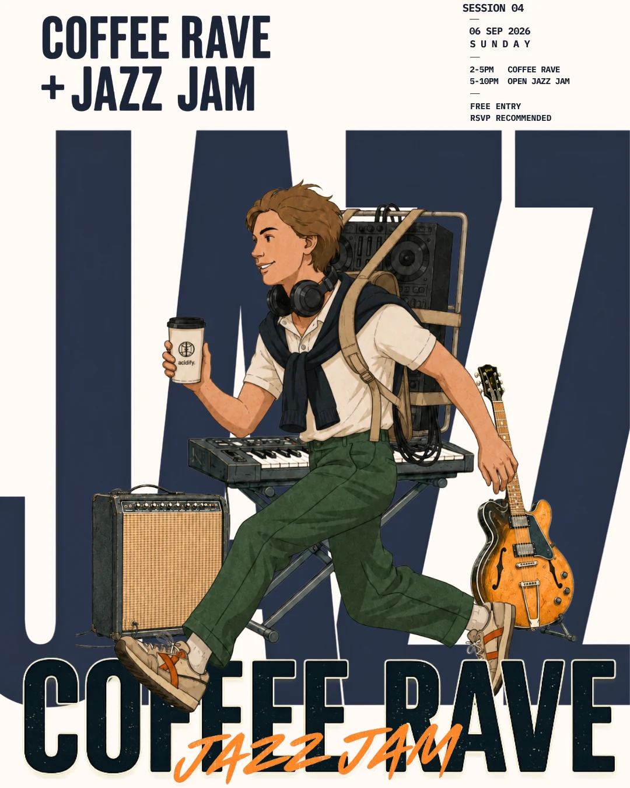

Day programme
Coffee Rave + Jazz Jam
Coffee, selectors and a daytime dance floor flow into a house-band showcase and open jazz jam.
- Date
- Sunday, 6 September 2026
- Running order
- 2–5PM — Coffee Rave
5–10PM — Open Jazz Jam - Entry
- Free entry · RSVP recommended
- Admission
- Guests under 18 must be accompanied by a responsible adult.